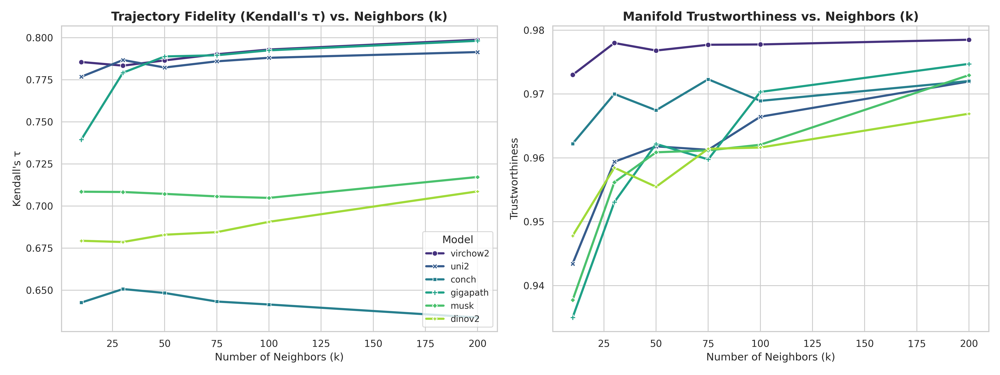

Appendix
Code Availability
The source code is available at the project GitHub repository.
AI Reflection
Google's Gemini model was used to help write code and tests and debug my experiment setup. It was particularly helpful for formatting plots. It was additionally used as part of a broad literature review to identify papers to read for background (along with other literature search strategies). Finally, it was used to help convert my write up from my document to this HTML format. It was not used to generate the experiment questions, methodology, or insights but it did provide formatting and grammar suggestions including words to bold or italicize for emphasis.
Sampling Strategy
Histopathology datasets exhibit hierarchical structure: each whole-slide image (WSI) contains thousands of patches, and slides vary substantially in size and patch count. Naive random sampling risks allowing a small number of large slides to dominate the patches representing a disease class, introducing slide-level confounds into the analysis.
To mitigate this, I implemented slide-aware sampling with a maximum patch limit per slide. For each disease stage, patches were sampled as follows: (1) identify all slides containing patches of that stage, (2) compute the maximum number of patches to sample per slide as target_per_class / num_slides, capped at a fixed maximum (50 patches per slide), and (3) randomly sample up to this limit from each slide, then aggregate across slides until reaching the target count of 1,000 patches per stage.
This approach ensures that trajectory fidelity reflects population-level disease progression patterns rather than slide-specific artifacts (e.g., staining variation, tissue preparation differences, or unusual morphology in individual cases). The 50-patch-per-slide cap was chosen to balance representation breadth against computational constraints; sensitivity analysis on this threshold was not performed.
Hyperparameter Search
To implement the diffusion pseudotime algorithm, two hyperparameters are required: the number of nearest neighbors (k) for adaptive graph construction, and the number of diffusion components used for spectral embedding.
Root Cell Selection
DPT requires specifying a root cell from which pseudotime is calculated. For all experiments, I used the centroid of the earliest disease stage as the root. This choice assumes that the earliest stage forms a coherent cluster with a well-defined center. In datasets where the earliest stage is heterogeneous (e.g., due to biological variability or label noise), trajectory fidelity may be sensitive to root selection. I did not perform systematic sensitivity analysis on root choice, which represents a limitation of the current methodology. Future work could investigate robustness to root selection by bootstrapping over multiple root candidates within the earliest stage.
Number of Nearest Neighbors
I performed a hyperparameter sweep for the number of nearest neighbors (k) because this parameter sets the bandwidth of the adaptive Gaussian kernel (defined as the distance to the k-th neighbor), thereby controlling how the algorithm normalizes for varying sampling densities across the disease progression manifold.
To ensure the graph structure accurately reflects raw embedding similarity, I evaluated manifold trustworthiness, a metric that quantifies the preservation of local neighborhoods by penalizing the introduction of false nearest neighbors (intrusions). As illustrated below, trajectory fidelity stabilizes for k > 75, while trustworthiness shows diminishing returns beyond k=50. I selected k=100 as the optimal operating point: it captures the full resolution of the progression structure without incurring the computational overhead associated with larger neighborhood calculations.

Number of Diffusion Components
I utilized the default of 10 diffusion components. Haghverdi et al. define the coordinates of the differentiation process as the "dominant eigenvectors of a transition matrix" [8]. Although the theoretical definition of DPT involves summing over random walks of all lengths, the primary trajectory structure is captured by these dominant eigenvectors. Since the biological process being modeled is a dominant source of variance in the embedding space, it is well-represented within the first few components (3–4), making the top 10 components more than sufficient to capture the progression dynamics without including high-frequency noise. This was further validated by the low intrinsic dimension of the diffusion space, exhibited by all models and disease progressions.